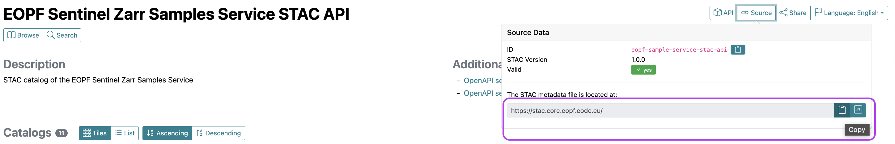

import requests
from typing import List, Optional, cast
from pystac import Collection, MediaType
from pystac_client import Client, CollectionClient
from datetime import datetimeAccess the EOPF Zarr STAC API with Python
Introduction
In this section, we will dive into the programmatic access of EOPF Zarr Collections available in the EOPF Sentinel Zarr Sample Service STAC Catalog. We will introduce Python libraries that enable us to effectively access and search through STAC catalogs.
What we will learn
- üîç How to programmatically browse through available collections available via the EOPF Zarr STAC Catalog
- üìä Understanding collection metadata in user-friendly terms
- üéØ Searching for specific data with help of the
pystacandpystac-clientlibraries.
Prerequisites
For this tutorial, we will make use of the pystac and pystac_client Python libraries that facilitate the programmatic access and efficient search of a STAC Catalog.
Import libraries
Helper functions
list_found_elements
As we are expecting to visualise several elements that will be stored in lists, we define a function that will allow us retrieve item id’s and collections id’s for further retrieval.
from pystac import Item
def list_found_elements(search_result):
"""
Retrieve item IDs and collection IDs from search results.
Uses pages_as_dicts() to handle pagination and cleans items
with missing href in assets (workaround for STAC API issues).
"""
id_list = []
coll_list = []
for page_dict in search_result.pages_as_dicts():
for feature in page_dict.get("features", []):
# Clean assets with missing href before parsing
if "assets" in feature:
feature["assets"] = {
key: asset for key, asset in feature["assets"].items() if "href" in asset
}
# Now parse the cleaned item
try:
item = Item.from_dict(feature)
id_list.append(item.id)
coll_list.append(item.collection_id)
except Exception as e:
item_id = feature.get("id", "unknown")
print(f"⚠️ Skipping item {item_id}: {e}")
continue
return id_list, coll_listEstablish a connection to the EOPF Zarr STAC Catalog
Our first step is to establish a connection to the EOPF Sentinel Zarr Sample Service STAC Catalog. For this, you need the Catalog‚Äôs base URL, which you can find on the web interface under the API & URL tab. By clicking on üîóSource, you will get the address of the STAC metadata file - which is available here.

Copy paste the URL: https://stac.core.eopf.eodc.eu/.
With the Client.open() function, we can create the access to the starting point of the Catalog by providing the specific url. If the connection was successful, you will see the description of the STAC catalog and additional information.
eopf_stac_api_root_endpoint = "https://stac.core.eopf.eodc.eu/" #root starting point
eopf_catalog = Client.open(url=eopf_stac_api_root_endpoint) # calls the selected url
eopf_catalog
<Client id=eopf-sample-service-stac-api>
Congratulations. We successfully connected to the EOPF Zarr STAC Catalog, and we can now start exploring its content.
Explore available collections
Once a connection established, the next logical step is to get an overview of all the collections the STAC catalog offers. We can do this with the function get_all_collections(). The result is a list, which we can loop through to print the relevant collection IDs.
Please note: Since the EOPF Zarr STAC Catalog is still in active development, we need to test whether a collection is valid, otherwise you might get an error message. The code below is testing for validity and for one collection, it throws an error.
You see, that so far, we can browse through 10 available collections
try:
for collection in eopf_catalog.get_all_collections():
print(collection.id)
except Exception:
print(
"* [https://github.com/EOPF-Sample-Service/eopf-stac/issues/18 appears to not be resolved]"
)sentinel-2-l2a
sentinel-1-l1-grd
sentinel-3-slstr-l2-lst
sentinel-3-slstr-l2-frp
sentinel-3-olci-l2-lrr
sentinel-3-olci-l1-efr
sentinel-2-l1c
sentinel-1-l1-slc
sentinel-3-olci-l1-err
sentinel-1-l2-ocn
sentinel-3-slstr-l1-rbt
sentinel-3-olci-l2-lfrIn a next step, we can select one collection and retrieve certain metadata that allow us to get more information about the selected collection, such as keywords, the ID and useful links for resources.
S2l2a_coll = eopf_catalog.get_collection('sentinel-2-l2a')
print('Keywords: ',S2l2a_coll.keywords)
print('Catalog ID: ',S2l2a_coll.id)
print('Available Links: ',S2l2a_coll.links)Keywords: ['Copernicus', 'Sentinel', 'EU', 'ESA', 'Satellite', 'Global', 'Imagery', 'Reflectance']
Catalog ID: sentinel-2-l2a
Available Links: [<Link rel=items target=https://stac.core.eopf.eodc.eu/collections/sentinel-2-l2a/items>, <Link rel=parent target=https://stac.core.eopf.eodc.eu/>, <Link rel=root target=<Client id=eopf-sample-service-stac-api>>, <Link rel=self target=https://stac.core.eopf.eodc.eu/collections/sentinel-2-l2a>, <Link rel=license target=https://sentinel.esa.int/documents/247904/690755/Sentinel_Data_Legal_Notice>, <Link rel=cite-as target=https://doi.org/10.5270/S2_-znk9xsj>, <Link rel=http://www.opengis.net/def/rel/ogc/1.0/queryables target=https://stac.core.eopf.eodc.eu/collections/sentinel-2-l2a/queryables>]Searching inside the EOPF STAC API
With the .search() function of the pystac-client library, we can search inside a STAC catalog we established a connection with. We can filter based on a series of parameters to tailor the search for available data for a specific time period and geographic bounding box.
Filter for temporal extent
Let us search on the datetime parameter. For this, we specify the datetime argument for a time period we are interested in, e.g. from 1 May 2020 to 31 May 2023. In addition, we also specify the collection parameter indicating that we only want to search for the Sentinel-2 L2A collection.
We apply the helper function list_found_elements which constructs a list from the search result. If we check the length of the final list, we can see that for the specified time period, 196 items were found.
time_frame = eopf_catalog.search( #searching the catalog
collections='sentinel-2-l2a',
datetime="2020-05-01T00:00:00Z/2023-05-31T23:59:59.999999Z") # the interval we are interested in, separated by '/'
# we apply the helper function `list_found_elements`
time_items=list_found_elements(time_frame)
print(time_frame)
print("Search Results:")
print('Total Items Found for Sentinel-2 L-2A between May 1, 2020, and May 31, 2023: ',len(time_items[0]))<pystac_client.item_search.ItemSearch object at 0x7fa8a98e23c0>
Search Results:
Total Items Found for Sentinel-2 L-2A between May 1, 2020, and May 31, 2023: 1797Filter for spatial extent
Now, let us filter based on a specific area of interest. We can use the bbox argument, which is composed by providing the top-left and bottom-right corner coordinates. It is similar to drawing the extent in the interactive map of the EOPF browser interface.
For example, we defined a bounding box of the outskirts of Innsbruck, Austria. We then again apply the helper function list_found_elements and see that for the defined area, only 39 items are available.
bbox_search = eopf_catalog.search( #searching the catalog
collections='sentinel-2-l2a',
bbox=(
11.124756, 47.311058, #top left
11.459839, 47.463624 #bottom-right
)
)
innsbruck_sets=list_found_elements(bbox_search) #we apply our constructed function that stores internal information
#Results
print("Search Result:")
print('Total Items Found: ',len(innsbruck_sets[0]))Search Result:
Total Items Found: 139Combined filtering: Collection + temporal extent + spatial extent
As a usual workflow, we often look for datasets within an AOI and a specific period of time. The search() function allows us also to combine the collection, bbox and datetime arguments in one search request.
Let us now search for Items available for the AOI around Innsbruck within the previously defined timeframe for the Sentinel-2 Level-2A collection. As a result, we get 27 Items that are available for our selection.
innsbruck_s2 = eopf_catalog.search(
collections= 'sentinel-2-l2a', # interest Collection,
bbox=(11.124756, 47.311058, # AOI extent
11.459839,47.463624),
datetime='2020-05-01T00:00:00Z/2025-05-31T23:59:59.999999Z' # interest period
)
combined_ins =list_found_elements(innsbruck_s2)
print("Search Results:")
print('Total Items Found for Sentinel-2 L-2A over Innsbruck: ',len(combined_ins[0]))Search Results:
Total Items Found for Sentinel-2 L-2A over Innsbruck: 27Let’s repeat a combined search for a different collection.
We define a new AOI for the coastal area of Rostock, Germany and we search over the Sentinel-3 SLSTR-L2 collection for the same time period as above.
As a result, 14 Items are available for the specified search.
rostock_s3 = eopf_catalog.search(
bbox=(11.766357,53.994566, # AOI extent
12.332153,54.265086),
collections= ['sentinel-3-slstr-l2-lst'], # interest Collection
datetime='2020-05-01T00:00:00Z/2025-05-31T23:59:59.999999Z' # interest period
)
combined_ros=list_found_elements(rostock_s3)
print("Search Results:")
print('Total Items Found for Sentinel-3 SLSTR-L2 over Rostock Coast: ',len(combined_ros[0]))Search Results:
Total Items Found for Sentinel-3 SLSTR-L2 over Rostock Coast: 18Retrieve Asset URLs for accessing the data
So far, we have made a search among the STAC catalog and browsed over the general metadata of the collections. To access the actual EOPF Zarr Items, we need to get their storage location in the cloud.
The relevant information we can find inside the .items argument by the .get_assets() function. Inside, it allows us to specify the .MediaType we are interested in. In our example, we want to obtain the location of the .zarr file.
Let us retrieve the url of the 27 available items over Innsbruck. The resulting URL we can then use to directly access an asset in our workflow.
def get_item_cleaned(collection, item_id):
"""
Retrieve an item from a collection and clean assets with missing href.
Workaround for STAC API issues where some assets lack href attribute.
"""
import requests
# Build the item URL and fetch raw JSON
items_href = collection.get_single_link("items").href
item_url = f"{items_href.rstrip('/')}/{item_id}"
response = requests.get(item_url)
response.raise_for_status()
item_dict = response.json()
# Clean assets with missing href
if "assets" in item_dict:
item_dict["assets"] = {
key: asset for key, asset in item_dict["assets"].items() if "href" in asset
}
return Item.from_dict(item_dict)
# Retrieve assets for Innsbruck items
assets_loc = []
for item_id in combined_ins[0]:
item = get_item_cleaned(S2l2a_coll, item_id)
zarr_assets = item.get_assets(media_type=MediaType.ZARR)
assets_loc.append(zarr_assets)
first_item = assets_loc[0] # we select the first item from our list
print("Search Results:")
print('URL for accessing', combined_ins[0][0], 'item: ', first_item['product'])Search Results:
URL for accessing S2B_MSIL2A_20250530T101559_N0511_R065_T32TPT_20250530T130924 item: <Asset href=https://objects.eodc.eu:443/e05ab01a9d56408d82ac32d69a5aae2a:202505-s02msil2a/30/products/cpm_v256/S2B_MSIL2A_20250530T101559_N0511_R065_T32TPT_20250530T130924.zarr>Retrieve Item metadata
Finally, once you selected an Item, you can also explore the relevant metadata on Item level. For example with the keys() function, you can retrieve the available assets of the selected Item.
print('Available Assets: ', list(first_item.keys()))Available Assets: ['SR_10m', 'SR_20m', 'SR_60m', 'AOT_10m', 'B01_20m', 'B02_10m', 'B03_10m', 'B04_10m', 'B05_20m', 'B06_20m', 'B07_20m', 'B08_10m', 'B09_60m', 'B11_20m', 'B12_20m', 'B8A_20m', 'SCL_20m', 'TCI_10m', 'WVP_10m', 'product']üí™ Now it is your turn
The following expercises will help you master the STAC API and understand how to find the data you need.
Task 1: Explore Your Area of Interest
- Go to http://bboxfinder.com/ and select an area of interest (AOI) (e.g. your hometown, a research site, etc.)
- Copy the bounding box coordinates of your area of interest
- Change the provided code above to search for data over your AOI
Task 2: Temporal Analysis
- Compare data availability across different years for the Sentinel-2 L-2A Collection.
- Search for items in the year 2022
- Repeat the search for the year 2024
Task 3: Explore the SAR Mission and combine multiple criteria
- Do the same for a different
Collection, the Sentinel-1 Level-1 GRD, e.g. you can use the IDsentinel-1-l1-grd - How many assets are available for the year 2024?
Conclusion
This tutorial has provided a clear and practical introduction on how you can programmatically access and search through EOPF Sentinel Zarr Sample Service STAC API.
What’s next?
In the following notebook, we will explore how to retrieve an Item of our interest, based on several parameters and load the actual data array as xarray.